Caso 021 · Alvar Aalto · 1933 · hospital (sanatorio)
El sanatorio es un claro: un plano horizontal a +4,20 m que mira al sur, apoyado en una masa de granito excavada en la roca del norte y alzado sobre pilares de madera. Donde el pinar de 20 m niega el sol de equinoccio y de verano, el plano lo recibe; los enfermos reposan en barras de madera sobre él, frente al horizonte. Sintetiza el lugar (pinar, roca al norte, terreno que baja al sur, latitud 60,47°), el programa (cura de reposo con funciones separadas), la composición (masa, plano, dos barras) y la construcción (granito y hormigón abajo, madera laminada arriba).
| Espacio | Luz | Altura solar | Resultado |
|---|---|---|---|
| Habitaciones (sur) | horizontal y sólida | equinoccio 29,5°, verano 53°, invierno 6,1° | equinoccio: penetra 4,6 m (dintel a 2,60 m); verano: la galería de 1,5 m lo reduce a 0,8 m |
| Planta 5 | horizontal | 6,1° sobre pinos de 20 m a 46 m | recibe un sol de invierno rasante (llega a +15,7 m en fachada) |
| Plantas 1-4 en invierno | difusa | — | luz reflejada por la nieve, vidrio U = 1,0 |
| Zócalo | difusa y artificial | — | vista al pinar bajo el plano; patio de llegada |
El sol de invierno no llega a las plantas bajas: la cura invernal es interior. Los locales de servicio de las barras y de la casa (aseos, enfermería, estar, office) reciben luz difusa del norte por ventanas altas de 1,20 m (alféizar 1,10 m).
La cura es reposo al aire libre: la terraza de cura del plano (138,6 x 11,7 m, al sur, a +4,20 m) lleva 84 tumbonas en dos filas y 10 bancos en el borde sur; cada habitación tiene además su galería de 1,5 m, y la plaza de llegada, bancos. U01 muestra el conjunto sobre la planta de cubiertas (solo lo que se ve desde arriba). En los alzados este y oeste se leen las seis filas de pilares de madera del plano y los pilares de las barras: son la estructura vista. La casa del personal (40 habitaciones, 1 por 6 camas) es residencia de un edificio aislado en el bosque y queda al norte, sin horizonte al sur.
Granito y hormigón en la masa (materiales del lugar y frente al frío); madera laminada en barras, plano y casa (tradición finlandesa, ligera y tectónica); vidrio al sur.
Se llega por el norte y se baja por una escalinata de 3,6 m al patio de llegada y a la recepción, abierta a él. El zócalo concentra tratamiento, comedor, cocina y servicios; bajo el plano, un vestíbulo cubierto con ascensores y escaleras sube a las barras. Las dos barras (mujeres al oeste, hombres al este) se unen por una pasarela cubierta en cada planta. El tráfico rodado (ambulancias, camión de la cocina) va por una calzada de un solo sentido de 5,5 m bajo el plano, separada de la fachada del vestíbulo por 5,0 m de plazas accesibles, un bordillo y una acera de 1,9 m; los enfermos pasan de la ambulancia a la acera por un paso peatonal rebajado de 3,6 m frente a la puerta del vestíbulo y de ahí, por un itinerario de 1,5 m, a cada ascensor de camillas. El aseo accesible unisex de la recepción (círculo de giro de 1,50 m) es el aseo público accesible; los aseos por sexo, de tres cabinas, son los ordinarios.
| Exigido | Propuesto | Cumple |
|---|---|---|
| Planos: plantas, secciones, alzados, detalle, exteriores | P01-P06, S01-S03, S04-S06 (alzados sur, norte, este y oeste), D01, U01, V01-V02, L01 | sí |
| Superficie 12.000 m² (9.000-15.000) | 12.165 m² útiles | sí |
| Enfermos 225-375 | 240 camas: 80 individuales con baño (planta 1-2) y 160 en dos camas (plantas 3-4) | sí |
| Alojamiento del personal | casa de 40 habitaciones | sí |
| Energía U 0,17 / 0,09 / 1,0 | aislante de 0,22 m en muro, 0,40 m en cubierta, vidrio triple | sí |
| Nieve 2,5 kN/m² | incluida en la carga de pilares y forjados | sí |
| Incendio, evacuación, accesibilidad: sin valores en el encargo | normas generales: cada planta de barra es un sector de menos de 900 m²; dos escaleras de 1,5 m en los extremos, pasarela como segunda vía, recorrido máximo ≈ 30 m; itinerario accesible desde la calle hasta cada ascensor y 8 plazas accesibles bajo el plano; calzada separada de la fachada del vestíbulo por una acera de 1,9 m con bordillo y un paso peatonal rebajado | sí |
Ninguna. La roca del norte es terreno.
Pilares de barra 0,30 x 0,30 m, madera GL28, esbeltez 38; pilares bajo el plano 0,40 x 0,40 m (3,3 m de altura, esbeltez 29); zócalo con pilares de hormigón de 0,40 m y forjado de 0,40 m (luz/16); forjado del plano de 0,30 m (luz/22) con una luz de 6,6 m; cimentación por zapata corrida bajo los muros y zapatas de 1,2 x 1,2 x 0,6 m con dado de 0,6 m bajo los pilares de madera (base a -1,40 m, bajo la helada; la zapata corrida del zócalo baja a -4,40 m).
| Elemento | Material y acabado |
|---|---|
| Muros del zócalo | piedra (granito) |
| Núcleos y rellanos | hormigón |
| Muros exteriores de barra | madera |
| Tabiques | yeso |
| Plano y forjados de barra | madera mixta |
| Cubierta de barras y casa | madera mixta con impermeabilización |
| Fachadas del vestíbulo y la pasarela | vidrio |
| Pavimentos | baldosa en zonas húmedas y servicios, tarima en habitaciones y estares, losa exterior |
Sala de calderas y sala eléctrica en el nivel -3,00; los aseos y vestuarios se agrupan en los mismos ejes para sus montantes. La renovación de aire de las salas enterradas queda para el proyecto de instalaciones: es un límite declarado. Residuos: contenedores en el nivel -3,00 que salen por el montacargas del extremo este a la dársena de la cocina.
Fachada sur de las barras (D01), de fuera a dentro: tablero de madera 25 mm, cámara ventilada 40 mm, aislante 220 mm, madera laminada 120 mm y yeso 12,5 mm. Cubierta: impermeabilización, aislante 400 mm y forjado de madera mixta de 300 mm, con vuelo de 2,40 m. D01 traza a 1:20, con las cotas del modelo, dos encuentros: la planta 1 (plano del claro a +4,20 sobre el pilar de madera de 0,40 m, su dado de 0,60 m y su zapata aislada de 1,20 x 1,20 x 0,60 m (base a -1,40 m, bajo la helada); galería de cura de 1,50 m en voladizo con barandilla de 1,10 m; vidrio triple, U = 1,0) y la cubierta de la planta 4 con su vuelo de 2,40 m.
Masa y compacidad al norte; vidrio al sur con la galería de cura y el vuelo de 2,4 m contra la luz de verano; viento del suroeste frenado por el bosque. Cada planta tiene dos escaleras y un ascensor de camillas de 1,40 x 2,40 m; la pasarela conecta los pasillos. Población por planta de barra: 40 enfermos y personal, ancho de escalera 1,5 m, muy superior a P/160.
Comparte con la obra original lo que impone el encargo: habitaciones al sur con vista al bosque, acceso por el norte y separación de funciones y sexos. Se aparta de ella porque su idea (un bloque alto con terrazas y alas articuladas) no sale de este lugar tal como lo da el encargo: aquí el sol bajo y el pinar de 20 m piden un plano abierto a +4,20 m y una masa que lo ancle, con madera donde el peso se aligera.
El soleamiento calculado y las vistas maqueta 1 y maqueta 2 sustituyen a las maquetas reales al sol.
Los avisos de ocupación baja de revision.md (secciones, alzados, U01, L01) se deben a la longitud de 140 m del edificio: se justifican y no se corrigen.
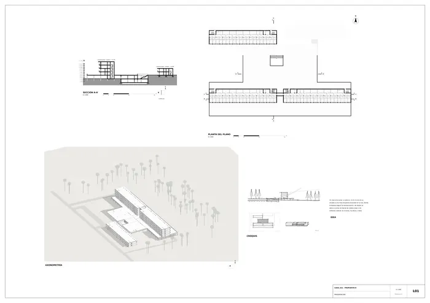
Presentación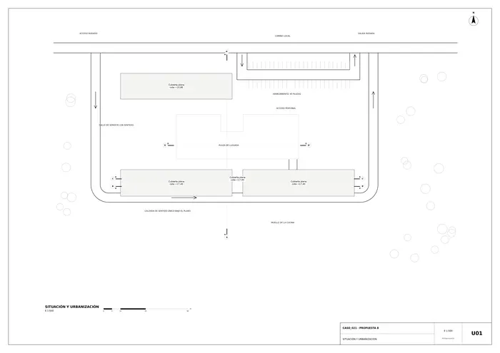
U01 · Situación y urbanización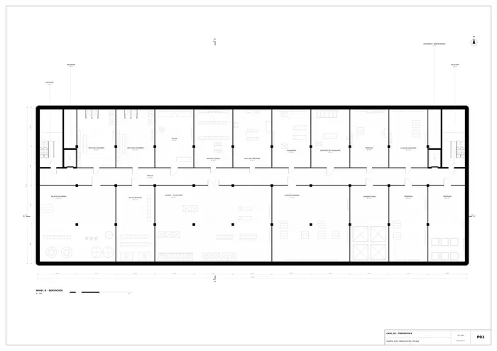
P01 · Planta -3,00 · servicios del zócalo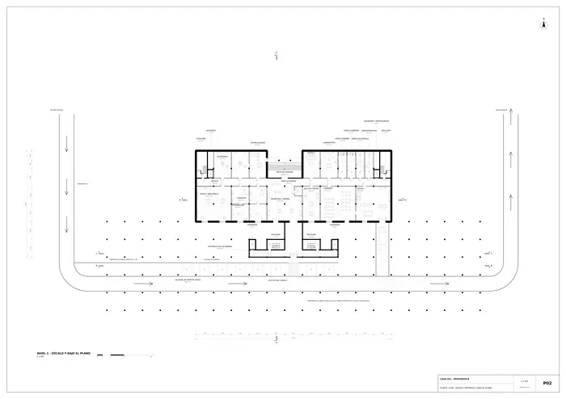
P02 · Planta +0,60 · zócalo, vestíbulo y bajo el plano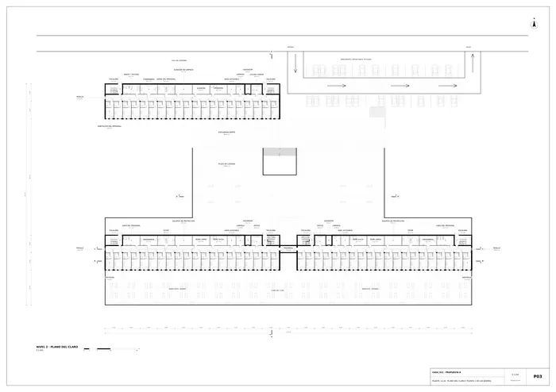
P03 · Planta +4,20 · plano del claro y planta 1 de las barras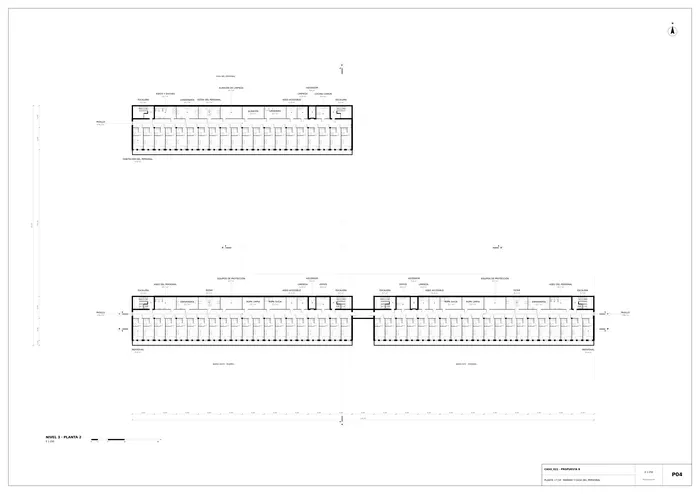
P04 · Planta +7,50 · barras y casa del personal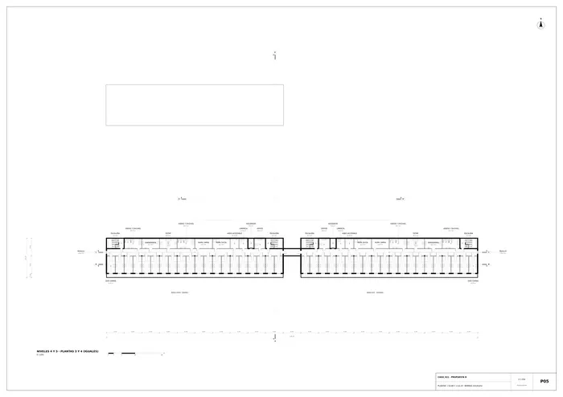
P05 · Plantas +10,80 y +14,10 · barras (iguales)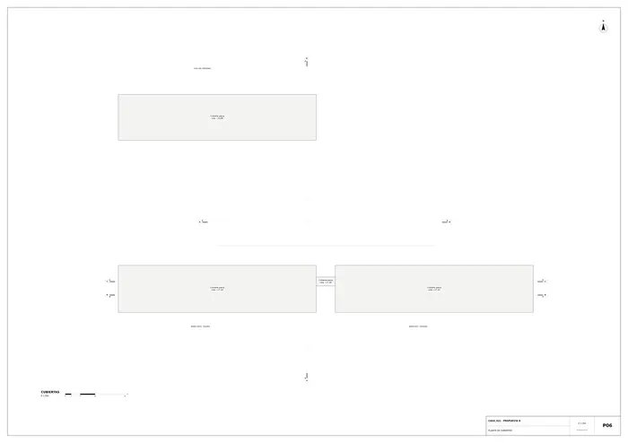
P06 · Planta de cubiertas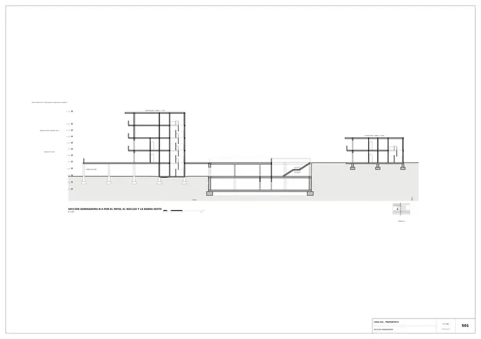
S01 · Sección generadora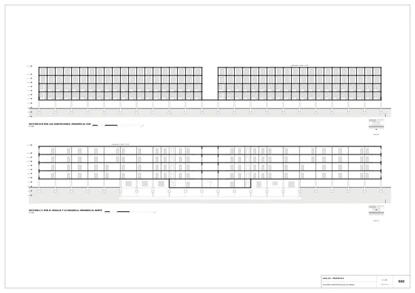
S02 · Secciones transversales de las barras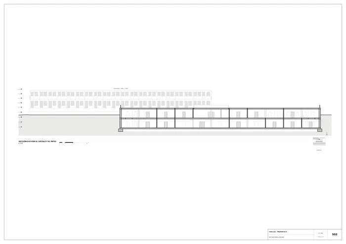
S03 · Sección por el zócalo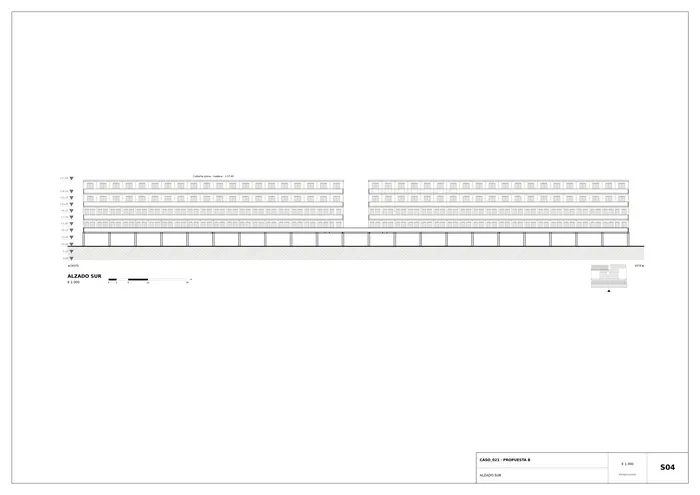
S04 · Alzado sur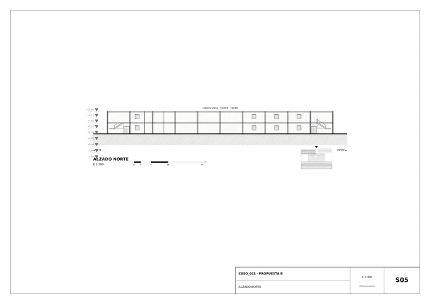
S05 · Alzado norte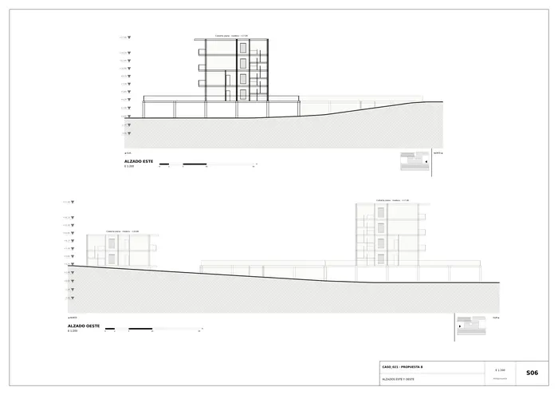
S06 · Alzados este y oeste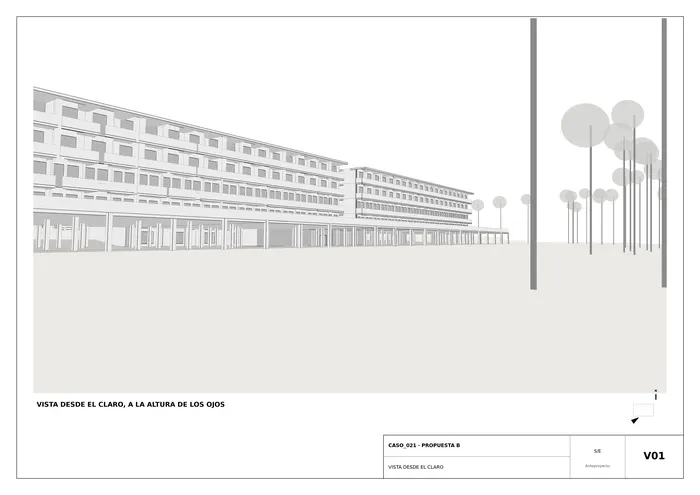
V01 · Vista desde el claro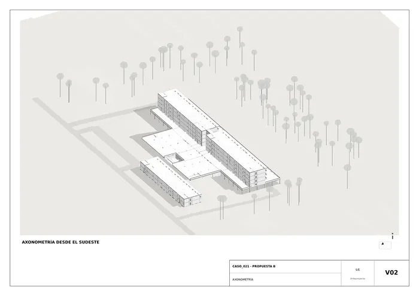
V02 · Axonometría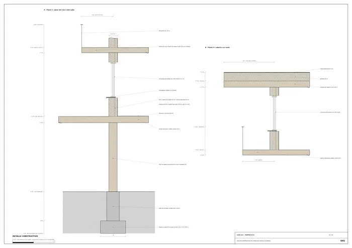
D01 · Sección constructiva de la fachada sur de las barrasMemoria de la propuesta tal como la entregó el sistema. Se han omitido las notas internas del proceso (revisiones, control de reconocimiento y referencias a archivos de trabajo).